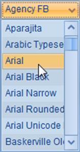
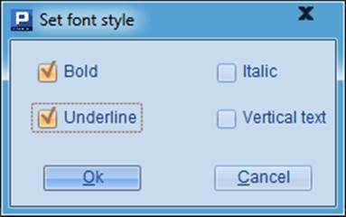
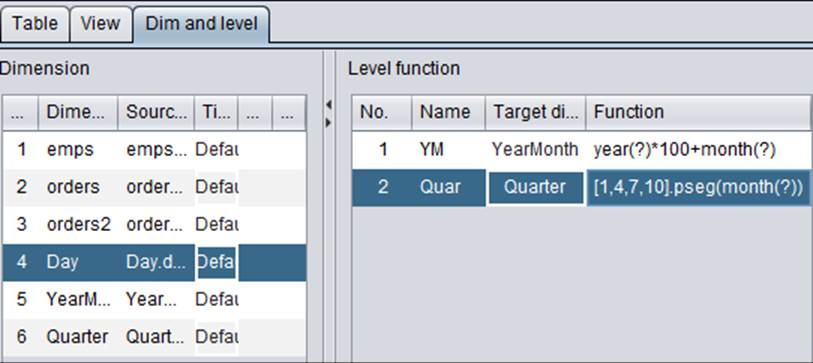
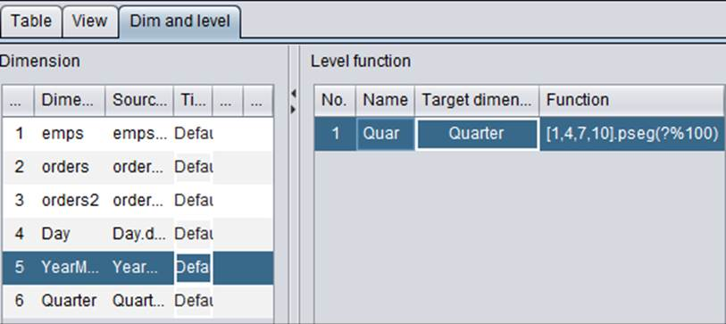
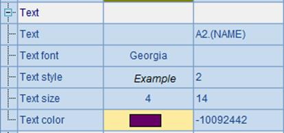
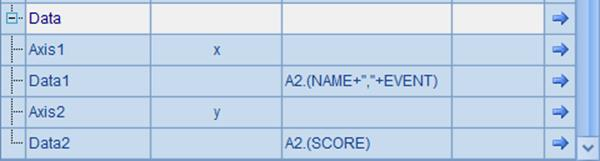

11.8.4 DQL logical table dimension
DQL allows using a logically existed but not physically exited table as a dimension table. Such a dimension table is called logical table, which is often used in date handling.
In the following we will add several date-related logical tables on DQL¡¯s Table tab. Select Edit->Add logical table through the menu bat to add a logical table definition:

Add a date-related logical table named Day, and click  to add the field definition day:

A logical table allows one-field primary key only. It is equivalent to a single-field table without records. Here we choose default data type for the date logical table. Actually, the logical table¡¯s data will be associated with a datetime type field. That is to say, field type of logical table Day is date and such a logical table is called date dimension. In DQL table definition window, a logical table is marked with a different icon from the regular DQL table.
Next, we add two more logical tables YearMonth and Quarter and use them as another two time-related dimension tables – YearMonth dimension table and Quarter dimension table:


The YearMonth table is used to get the year and month part of the date data, and Quarter table to get the quarter that the date belongs to. Data types of both dimension tables are integer. Such a logical table is called integer dimension.
Since the three logical tables stores data according to time, there are associations between them actually. Based on Day table, you can get the year, month and quarter a date belongs to, and from YearMonth table you can find the quarter a month falls in. We can represent these associations with functions. If a dimension table can be associated with another dimension through a function¡¯s computing result, we call it level function. For instance, we add a level function for dimension table Day and set up association relationships between it and another two time-dimension tables:

Set a level function on ¡°Dim and level¡± tab under ¡°DQL¡± page by giving a distinct name to it and creating association with the primary key of a certain dimension table. In a level function, we use the quotation mark ? to represent the primary key value of the current dimension table. Through the level function, we can get data on different levels in the YearMonth table or Quarter table from a specified date. A level function does not compute bidirectionally. You can get the quarter a certain date belongs to, but you cannot find out a date according to a certain quarter value. Now, we add a level function for YearMonth table and set up the association between it and the Quarter table through the function:

In orders table¡¯ ¡°Foreign key¡± configuration tab, we add an association relationship between it and the date dimension table Day:
Add a new foreign key fk1 for orders table to associate with dimension table Day by matching orders¡¯ OTime field with Day¡¯s primary key day. Through dimension table Day¡¯s level function, orders table can also association with another two time-related dimension tables YearMonth and Quarter. We can use the association relationships in DQL queries, for instance:

Through the level function, the date data stored in OTime field is able to associate with YearMonth table and get ym field data from the latter. In the DQL query, OTime#ym means getting corresponding ym values according to OTime field through the level function.
You can also use a multilevel dimension to filter data. To get orders of the 2nd quarter, for instance:

Using dimensions in DQL helps to make most use of table data and meet more real-world business needs. One dimension table an associate with foreign keys of multiple tables, and dimension table¡¯s level function is convenient to use. With the above date-related dimension, we can get data from different levels only by creating association between a datetime foreign key and a date dimension table.